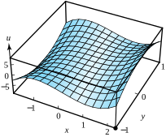
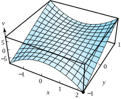
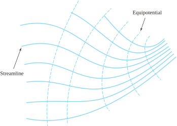
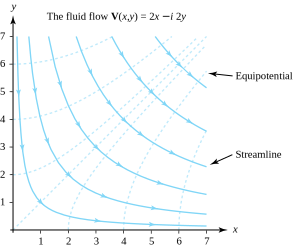

Let \(\phi (x,y)\) be a real-valued function of the two real variables \(x\) and \(y\) defined on a domain \(D\text{.}\) (Recall that a domain is a connected open set.) The partial differential equation
is known as Laplace’s equation (sometimes referred to as the potential equation). If \(\phi, \, \phi _x, \, \phi_y, \, \phi _{xx}, \, \phi _{xy}, \, \phi _{yx}\text{,}\) and \(\phi _{yy}\) are all continuous, and if \(\phi (x,y)\) satisfies Laplace’s equation, then \(\phi(x,y)\) is harmonic on \(D\text{.}\) Harmonic functions are important in applied mathematics, engineering, and mathematical physics. They are used to solve problems involving steady state temperatures, two-dimensional electrostatics, and ideal fluid flow. In Chapter 10 we describe how complex analysis techniques can be used to solve some problems involving harmonic functions. We begin with an important theorem relating analytic and harmonic functions.
Theorem3.3.1.
Let\(f(z) = u(x,y) +iv(x,y)\) be an analytic function on a domain \(D\text{.}\) Then both \(u\) and \(v\) are harmonic functions on \(D\text{.}\) In other words, the real and imaginary parts of an analytic function are harmonic.
Proof.
In Corollary 6.3 we will show that, if \(f(z)\) is analytic, then all partial derivatives of \(u\) and \(v\) are continuous. Using that result here, we see that, as \(f\) is analytic, \(u\) and \(v\) satisfy the Cauchy-Riemann equations
Similarly, taking the partial derivative of each side with respect to \(y\) yields
\begin{equation*}
u_{xy}=v_{yy} \text{ and } u_{yy} = -v_{xy}\text{.}
\end{equation*}
The partial derivatives \(u_{xy}\text{,}\)\(u_{yx}\text{,}\)\(v_{xy}\text{,}\) and \(v_{yx}\) are all continuous, so we use a theorem from the calculus of real functions that states that the mixed partial derivatives are equal; that is,
\begin{equation*}
u_{xy}=u_{yx} \text{ and } v_{xy}=v_{yx}\text{.}
\end{equation*}
Combining all these results finally gives \(u_{xx}+u_{yy}=v_{yx}-v_{xy}=0\text{,}\) and \(v_{xx}+v_{yy}=-u_{yx}+u_{xy}=0\text{.}\) Therefore both \(u\) and \(v\) are harmonic functions on \(D\text{.}\)
If we have a function \(u(x,y)\) that is harmonic on the domain \(D\) and if we can find another harmonic function \(v(x,y)\) such that the partial derivatives for \(u\) and \(v\) satisfy the Cauchy-Riemann equations throughout \(D\text{,}\) then we say that \(v(x,y)\) is a harmonic conjugate of \(u(x,y)\text{.}\) It then follows that the function \(f(z) =u(x,y) + iv(x,y)\) is analytic on \(D\text{.}\)
Example3.3.2.
If \(u(x,y) =x^2-y^2\text{,}\) then \(u_{xx}(x ,y) + u_{yy}(x,y) = 2-2 = 0\text{;}\) hence \(u\) is a harmonic function for all \(z\text{.}\) We find that \(v(x,y) = 2xy\) is also a harmonic function and that
\begin{equation*}
u_x=v_y=2x \text{ and } u_y=-v_x=-2y\text{.}
\end{equation*}
Therefore \(v\) is a harmonic conjugate of \(u\text{,}\) and the function \(f\) given by
Figures 3.3.4 and Figure 3.3.5 show the graphs of these two functions. The partial derivatives are \(u_x(x,y)=3x^2-3y^2, \, u_y(x,y)=-6xy, \, v_x(x,y)=6xy\text{,}\) and \(v_y(x,y)=3x^2-3y^2\text{.}\) They satisfy the Cauchy-Riemann equations because they are the real and imaginary parts of an analytic function. At the point \((x,y) =(2,-1)\text{,}\) we have \(u_x(2,-1)=v_y(2,-1) =9\text{,}\) and these partial derivatives appear along the edges of the surfaces for \(u\) and \(v\) where \(x=2\) and \(y=-1\text{.}\) Similarly, \(u_y(2,-1) =12\) and \(v_x(2,-1) =-12\) also appear along the edges of the surfaces for \(u\) and \(v\) where \(x=2\) and \(y=-1\text{.}\)

Figure3.3.4.\(u(x,y) =x^3-3xy^2\)

Figure3.3.5.\(v(x,y)=3x^2y-y^3\)
We can use complex analysis to show easily that certain combinations of harmonic functions are harmonic. For example, if \(v\) is a harmonic conjugate of \(u\text{,}\) then their product \(\phi(x,y)=u(x,y)v(x,y)\) is a harmonic function. This condition can be verified directly by computing the partial derivatives and showing that Equation (3.3.1) holds, but the details are tedious. If we use complex variable techniques instead, we can start with the fact that \(f(z)=u(x,y) + iv(x,y)\) is an analytic function. Then we observe that the square of \(f\) is also an analytic function:
We then know immediately that the imaginary part, \(2u(x,y) v(x,y)\text{,}\) is a harmonic function by Theorem 3.3.1. A constant multiple of a harmonic function is harmonic, so it follows that \(\phi\) is harmonic. We leave as an exercise to show that, if \(u_1\) and \(u_2\) are two harmonic functions that are not related in the preceding fashion, then their product need not be harmonic.
Theorem3.3.6.Construction of a harmonic conjugate.
Let \(u(x,y)\) be harmonic in an \(\varepsilon\)-neighborhood of the point \((x_0,y_0)\text{.}\) Then there exists a conjugate harmonic function \(v(x,y)\) defined in this neighborhood such that \(f(z)=u(x,y)+iv(x,y)\) is an analytic function.
Proof.
A conjugate harmonic function \(v\) will satisfy the Cauchy-Riemann equations \(u_x=v_y\) and \(u_y=-v_x\text{.}\) Assuming that such a function exists, we determine what it would have to look like by using a two-step process. First, we integrate \(v_y\) (which should equal \(u_x\)) with respect to \(y\) and get
where \(C(x)\) is a function of \(x\) alone that is yet to be determined. Second, we compute \(C'(x)\) by differentiating both sides of this equation with respect to \(x\) and replacing \(v_x\) with \(-u_y\) on the left side, which gives
It can be shown (we omit the details) that because \(u\) is harmonic, all terms except those involving \(x\) in the last equation will cancel, revealing a formula for \(C\,'(x)\) involving \(x\) alone. Elementary integration of the single-variable function \(C\,'(x)\) can then be used to discover \(C(x)\text{.}\) We finally observe that the function \(v\) so created indeed has the properties we seek.
Technically we should always specify the domain of function when defining it. When no such specification is given, it is assumed that the domain is the entire complex plane, or the largest set for which the expression defining the function makes sense.
Example3.3.7.
Show that \(u(x,y) =xy^3-x^3y\) is a harmonic function and find a conjugate harmonic function \(v(x,y)\text{.}\)
Solution.
We follow the construction process of Theorem 3.3.6. The first partial derivatives are
\begin{equation}
u_x(x,y) =y^3-3x^2y \text{ and } u_y(x,y) =3xy^2-x^3\text{.}\tag{3.3.3}
\end{equation}
To verify that \(u\) is harmonic, we compute the second partial derivatives and note that \(u_{xx}(x,y)+u_{yy}(x,y)=-6xy+6xy=0\text{,}\) so \(u\) satisfies Laplace’s Equation (3.3.1). To construct \(v\text{,}\) we start with Equation (3.3.2) and the first of Equations (3.3.3) to get
Differentiating the left and right sides of this equation with respect to \(x\) and using \(-u_y(x,y)=v_x(x,y)\) and Equations (3.3.3) on the left side yields
Harmonic functions arise as solutions to many physical problems. Applications include two-dimensional models of heat flow, electrostatics, and fluid flow. We now give an example of the latter.
We assume that an incompressible and frictionless fluid flows over the complex plane and that all cross sections in planes parallel to the complex plane are the same. Situations such as this occur when fluid is flowing in a deep channel. The velocity vector at the point \((x, y)\) is
Figure3.3.8.The vector field \(\mathbf{V}(x,y)=p(x,y)+iq(x,y)\text{,}\) which can be considered as a fluid flow
The assumption that the flow is irrotational and has no sources or sinks implies that both the curl and divergence vanish; that is, \(q_x-p_y=0\) and \(p_x+q_y=0\text{.}\) Hence \(p\) and \(q\) obey the equations
\begin{equation}
p_x(x,y) =-q_y(x,y) \text{ and } p_y(x,y) =q_x(x,y)\text{.}\tag{3.3.5}
\end{equation}
Equations (3.3.5) are similar to the Cauchy-Riemann equations and permit us to define a special complex function:
Here we have \(u_x=p_x, \, u_y=p_y, \, v_x=-q_x\text{,}\) and \(v_y=-q_y\text{.}\) We can use Equations (3.3.5) to verify that the Cauchy-Riemann equations hold for \(f\text{:}\)
Assuming that the functions \(p\) and \(q\) have continuous partials, Theorem 3.2.6 guarantees that function \(f\) defined in Equation (3.3.6) is analytic and that the fluid flow of Equation (3.3.4) is the conjugate of an analytic function; that is,
Theorem 3.3.1 implies that \(\phi (x,y)\) is a harmonic function. Using the vector interpretation of a complex number, the gradient of \(\phi\) can be written as
Equation (3.2.2) says that \(\phi_x(x,y) +i\psi_x(x,y) =F\,'(z)\text{,}\) which by the preceding equation and Equation (3.3.7) implies that
\begin{equation*}
\text{ grad } \phi(x,y) = \overline{F\,'(z)} = \overline{f(z)}
\end{equation*}
Finally, from Equation (3.3.4)\(\phi\) is the scalar potential function for the fluid flow, so
\begin{equation*}
\mathbf{V}(x,y) = \text{ grad } \phi(x,y)
\end{equation*}
The curves given by \(\{(x,y) :\phi(x,y) = \text{ constant } \}\) are called equipotentials. The curves \(\{(x,y) : \psi(x,y) = \text{ constant } \}\) are called streamlines and describe the path of fluid flow. In Section 10.4 we show that the family of equipotentials is orthogonal to the family of streamlines, as depicted in Figure 3.3.9.

Figure3.3.9.The families of orthogonal curves \(\{(x,y):\phi (x,y)= constant \}\) and \(\{(x,y):\psi (x,y)= constant \}\) for the function \(F(z)=\phi (x,y)+i\psi (x,y)\)
Example3.3.10.
Show that the harmonic function \(\phi(x,y)=x^2-y^2\) is the scalar potential function for the fluid flow expression \(\mathbf{V}(x,y) = 2x-i2y\text{.}\)
Note that the hyperbolas \(\phi(x,y) =x^2-y^2=C\) are the equipotential curves and that the hyperbolas \(\psi(x,y) =2xy=C\) are the streamline curves; these curves are orthogonal, as shown in Figure 3.3.11.

Figure3.3.11.The equipotential curves \(x^2-y^2=C\) and streamline curves \(2xy=C\) for the function \(F(z)=z^2\)
ExercisesExercises
1.
Determine where the following functions are harmonic .
(a)
\(u(x,y) =e^x\cos y\) and \(v(x,y) =e^x\sin y\text{.}\)
Solution.
\(u\) is harmonic for all values of \((x,y)\text{.}\)
(b)
\(u(x,y) = \ln (x^2+y^2)\) for \((x,y) \ne (0,0)\text{.}\)
2.
Does an analytic function \(f(z)=u(x,y)+iv(x,y)\) exist for which \(v(x,y)=x^3+y^3\text{?}\) Why or why not?
3.
Let \(a, \, b\text{,}\) and \(c\) be real constants. Determine a relation among the coefficients that will guarantee that the function \(\phi(x,y)=ax^2+bxy+cy^2\) is harmonic.
Solution.
\(c=-a\text{.}\)
4.
Let \(v(x,y) = \arctan(\frac{y}{x})\) for \(x \ne 0\text{.}\) Compute the partial derivatives of \(v\) and verify that \(v\) satisfies Laplace’s equation.
5.
Find an analytic function \(f(z)=u(x,y)+iv(x,y)\) for the following expressions.
(a)
\(u(x,y) =y^3-3x^2y\text{.}\)
Solution.
\(v(x,y)=x^3-3xy^2+c\text{.}\)
(b)
\(u(x,y) = \sin y\sinh x\text{.}\)
(c)
\(v(x,y) =e^y\sin x\text{.}\)
Solution.
\(u(x,y)=-e^y\cos x+c\text{.}\)
(d)
\(v(x,y) = \sin x\cosh y\text{.}\)
6.
Let \(u_1(x,y)=x^2-y^2\) and \(u_2(x,y)=x^3-3xy^2\text{.}\) Show that \(u_1\) and \(u_2\) are harmonic functions but that their product \(u_1(x,y) u_2(x,y)\) is not a harmonic function.
7.
Let \(u(x,y)\) be harmonic on a region \(D\) that is symmetric about the line \(y=0\text{.}\) Show that \(U(x,y)=u(x,-y)\) is harmonic on \(D\text{.}\) \hint{Use the chain rule for differentiation of real functions and note that \(u(x,-y)\) is really the function \(u\big(g(x,y)\big)\text{,}\) where \(g(x,y)=(x,-y)\text{.}\)}
Solution.
By the chain rule, \(U_x(x,y)=u_x(x,-y), \; U_y(x,y)=-u_y(x,-y); \;U_{xx}(x,y)=u_{xx}(x,-y)\text{,}\) and \(U_{yy}(x,y)=u_{yy}(x,-y)\text{.}\) Hence, \(U_{xx}(x,y)+U_{yy}(x,y) = u_{xx}(x,-y)+u_{yy}(x,-y)=0\text{.}\)
8.
Let \(v\) be a harmonic conjugate of \(u\text{.}\) Show that \(-u\) is a harmonic conjugate of \(v\text{.}\)
9.
Let \(v\) be a harmonic conjugate of \(u\text{.}\) Show that \(h=u^2-v^2\) is a harmonic function.
Solution.
The function \(f=u+iv\) must be analytic, hence so is \(f^2=u^2-v^2+i(2uv)\text{.}\) The result then follows by Theorem 3.3.1
10.
Suppose that \(v\) is a harmonic conjugate of \(u\) and that \(u\) is a harmonic conjugate of \(v\text{.}\) Show that \(u\) and \(v\) must be constant functions.
11.
Let \(f(z)=f(re^{i\theta})=u(r,\theta)+iv(r,\theta)\) be analytic on a domain \(D\) that does not contain the origin. Use the polar form of the Cauchy-Riemann equations \(u_\theta = -rv_r\text{,}\) and \(v_\theta = ru_r\text{.}\) Differentiate them first with respect to \(\theta\) and then with respect to \(r\text{.}\) Use the results to establish the polar form of Laplace’s equation:
Sketch the equipotentials \(\phi =1,\frac{1}{2},\frac{1}{4}\) and streamlines \(\psi=1, \, \frac{1}{2},\frac{1}{4}\text{.}\)
14.
Assume that \(F(z) = \phi(x,y) + i\psi(x,y)\) is analytic on the domain \(D\) and that \(F\,'(z) \ne 0\) on \(D\text{.}\) Consider the families of level curves \(\{\phi(x,y) = \text{ constant } \}\) and \(\{\psi(x,y) = \text{ constant } \}\text{,}\) which are the equipotentials and streamlines for the fluid flow V\((x,y) = \overline{F\,'(z)}\text{.}\) Prove that the two families of curves are orthogonal. \hint{Suppose that \((x_0,y_0)\) is a point common to the two curves \(\phi (x,y) =c_1\) and \(\psi (x,y) =c_2\text{.}\) Use the gradients of \(\phi\) and \(\psi\) to show that the normals to the curves are perpendicular.}
15.
We introduce the logarithmic function in Chapter 5. For now, let \(F(z)= \mathrm{Log}\,z= \ln |z|+i\mathrm{Arg}\,z\text{.}\) Here we have \(\phi(x,y) = \ln |z|\) and \(\psi (x,y) = \mathrm{Arg}\,z\text{.}\) Sketch the equipotentials \(\phi =0 , \, \ln 2, \, \ln 3, \, \ln 4\) and streamlines \(\psi = \frac{k\pi}{8}\) for \(k=0,1,\ldots,7\text{.}\)
Solution.
The equipotentials are concentric circles with radii 1, 2, 3, and 4. The streamlines are lines from the origin making an angle of \(\frac{k\pi}{8}\) radians for \(k=0,1,\ldots,7\text{.}\)
16.
Theorem 3.3.6 claims that it is possible to prove that \(C\,'(x)\) is a function of \(x\) alone. Prove this assertion.
17.
Discuss and compare the statements “\(u(x,y)\) is harmonic” and “\(u(x,y)\) is the imaginary part of an analytic function.”